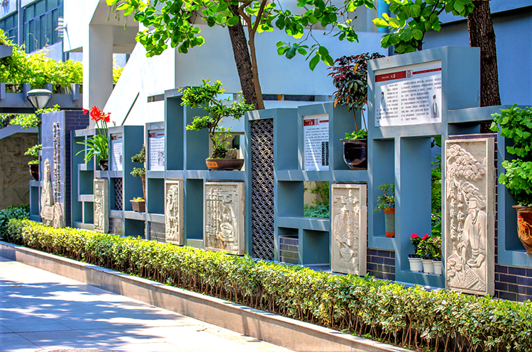

机构
机构 新闻
新闻 信息公开
信息公开 服务
服务 互动
互动 办公系统
办公系统
成都市金牛区围绕提升城市环境品质和新时代学校全面育人要求，积极探索公园城市理念的学校建设表达，努力提高学校建筑文化品位，建设一批与未来学校发展形态相适应、与城市文态形态业态生态相协调、与美丽宜居公园城市相匹配的“美丽校园”。
一、学校规划融入城市风貌
一是突出同步规划。将学校与新一轮城市公共服设施建设同步规划、同步建设。对标上海市、深圳市校园建设样板，把在建36所校园、规划建设的20余个点位，按照“创新、协调、绿色、开放、共享”新发展理念，主动融入公园城市建设，推动校园外部建筑形态和内部空间布局提升，打造更具开放性、人文性、安全性、舒适性、优美性的新型校园。
成都市石笋街小学校操场
二是突出绿色生态。将形态优美、功能复合作为校园结构布局优化的基础性要素，强调建设绿色生态校园。园内景观按“海绵城市”要求进行设计，总平大面积采用透水铺装，合理利用建设过程中的土方丰富地面造型，通过退台做“多层地表+立体种植”提升绿化效果。体育馆、图书馆等大型场馆设置顶面采光通风窗，地下室设置采光通风井，其余房间大面积开窗，高效利用自然光和自然风，实现节能生态。
三是突出资源共享。突出校园的公共、公益属性。全区所有新建幼儿园均设置亲子活动室，为社区开展0～3岁教育提供资源。在22个学校内建成社区标准足球场，并错时有序对社会开放。统筹校园周边公服用地，联建、叠建运动馆、图书馆、游园绿地等公共服务设施，突破物理边界实现资源共享。
二、学校风格彰显金牛特色
一是建特色校园。编制《金牛区学校建筑设计导则》，打造根植天府文化、彰显“交子故里、大道金牛”特色。通过钟楼（钟塔）、平坡结合屋面、文化烙印显著的大门围墙等特有建筑元素提升金牛校园的辨识度。架空层、退台、露台、屋面、走廊过厅等交互空间采用半围合或全开放的布局形式，体现趣味性和多样性，最大程度满足“非正式学习”需求。设置旗台、不少于60平方米的舞台、LED屏，利于集中开展思政教育及各类文体活动。一层局部架空，并利用慢行系统与其它场地串联，丰富活动空间。设置“大走道、多平台”可变空间，为三级课程建设提供发展空间。种植区树种选择以果木为主，让学生可攀爬、可采摘、可品尝。
成都市全兴小学兴雨田园
二是建集约校园。积极应对城市发展和人口发展新形势对教育资源的需求，根据人口密度大（每平方公里1.5万人）、流动人员随迁子女多（占比53.57%）的区域实际，高效利用土地资源，着力解决学位需求。适度超前建设，开发利用地下及屋面空间，非教学用房幼儿园建至4层、小学建至5层、中学建至6层，建筑容积率提高至1.2-1.4，按设计规模增设不少于20%的“海绵学位”，构建“小而美、小而全、小而优”的校园，为城区未来校园建设提供“金牛样本”。
三是建人文校园。校园建设传承优秀传统建筑文化，吸收其它经典建筑元素，以具有中国传统建筑特色的风格为主，融合办学理念、所处社区风貌，形成人文浓郁的校园。重视“一校一特色”空间打造，公共空间体现相应办学特色，教学空间与特色课程关联。选用绿色建材和先进建造工艺，进一步提升质量、安全水平，从清洁的水，舒适的光、声、热、湿环境等着手，打造安全健康的人文校园。

四川省财贸高级中学川菜文化体验长廊
三、学校建设落实品质保障
一是建强“三支队伍”。组建校园建设牵头、专班、筹备3支队伍。由教育局基建、设备、应急等业务科室组成牵头队伍，负责协调项目推进，提供技术支持；由教育系统内德育、教学、后勤等管理人员组成专班队伍，负责初设方案审查、空间布局优化；由领办学校组建筹备队伍，负责按学校发展提出个性化空间建设需求、结合办学理念植入校园文化建设、协调做好设施设备配置。加强培训提升能力，依托具体项目及创新课题，每年聘请专家进行指导，外派参加专题培训，形成“实践-学习-实践-提升”的良性互动。
二是抓牢“六个环节”。坚持无规划不设计、无设计不施工，严把“编制设计任务书”“方案设计”“方案审查”“深化设计（建筑、景观、室内）”“项目建设过程品控（工艺、材质）”“项目验收”六个关键环节，每个环节均需得到确认，相关单位才能进入下一环节。分项目建立工作群，畅通信息及时解决问题，确保全区校园按设计导则呈现。
成都市树德沙河中学聚沙博物馆
三是用好“一张清单”。根据设计导则，结合项目用地、学位需求、办学定位、成本控制等，科学编制项目任务书，贯穿建设过程，明确各类房间使用面积、装饰装修、选材用材标准，总平景观、配套设施功能用途，杜绝校园建设的零散性、随意性，确保全区校园统一规划、统一建设。